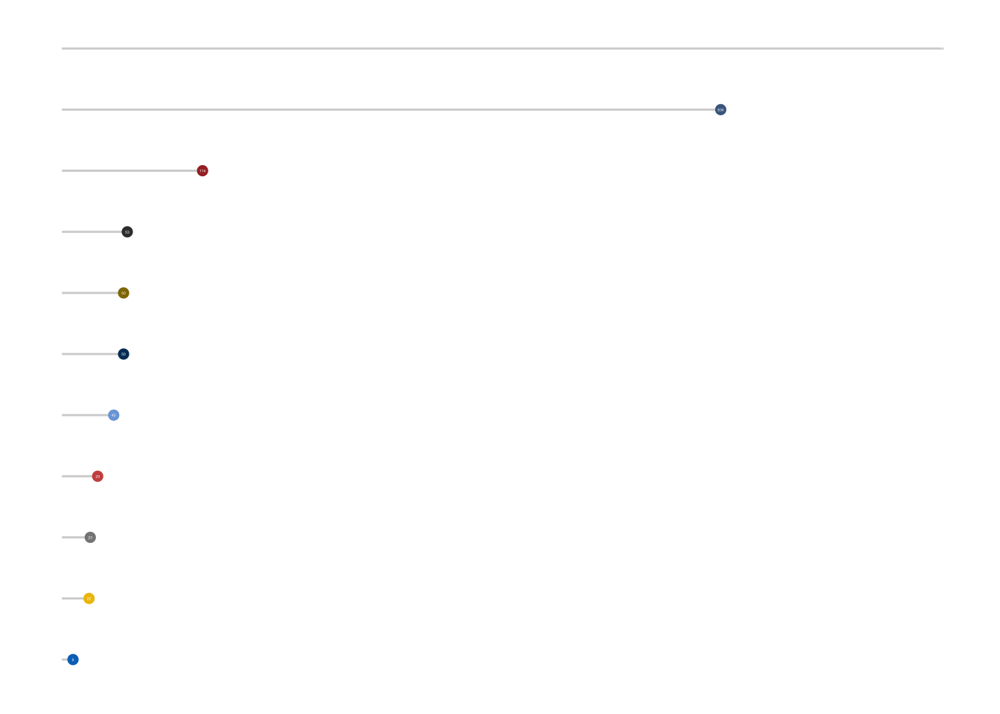

Create logo for R package UCSCXenaTools with hexSticker
Shixiang Wang · 2019-06-20
A few days ago, I asked Tyler about how did he create the logo of R package exoplanets.
Figure 1: logo of R package exoplanets
I really love this logo because it is very simple and elegant.
He told me he used a software called omnigraffle to make the logos. I tried learning this software and still did not know how to use it to create a nice logo because I am not good at creating beautiful things.
I gave up trying and returned back to use R package hexSticker. I used it before to create the first logo for UCSCXenaTools. Last time I used a figure from web to create logo, the result logo is okay but I think it’s a little ugly.
This time I want to try something new. I am not good at drawing, after a few minutes of thinking, I decided to draw a plot which can represent the datasets information of UCSC Xena database. R package ggpubr based on ggplot2 is a good tool for doing this.
First, I loaded all necessary packages.
library(hexSticker)
library(UCSCXenaTools)
#> =========================================================================================
#> UCSCXenaTools version 1.3.3
#> Project URL: https://github.com/ropensci/UCSCXenaTools
#> Usages: https://cran.r-project.org/web/packages/UCSCXenaTools/vignettes/USCSXenaTools.html
#>
#> If you use it in published research, please cite:
#> Wang et al., (2019). The UCSCXenaTools R package: a toolkit for accessing genomics data
#> from UCSC Xena platform, from cancer multi-omics to single-cell RNA-seq.
#> Journal of Open Source Software, 4(40), 1627, https://doi.org/10.21105/joss.01627
#> =========================================================================================
#> --Enjoy it--
library(dplyr)
#>
#> Attaching package: 'dplyr'
#> The following objects are masked from 'package:stats':
#>
#> filter, lag
#> The following objects are masked from 'package:base':
#>
#> intersect, setdiff, setequal, union
library(ggpubr)
#> Loading required package: ggplot2
#>
#> Attaching package: 'ggpubr'
#> The following object is masked from 'package:hexSticker':
#>
#> theme_transparentThen I calculated dataset counts in each UCSC Xena Hubs.
df = XenaData %>%
dplyr::group_by(XenaHostNames) %>%
dplyr::summarise(count = n())
#> `summarise()` ungrouping output (override with `.groups` argument)Next I drawed a blank dotchart according to reference of ggpubr and README of hexSticker.
# reference https://rpkgs.datanovia.com/ggpubr/
p <- ggdotchart(df, x = "XenaHostNames", y = "count",
color = "XenaHostNames",
palette = "jco",
sorting = "descending", # Sort value in descending order
add = "segments", # Add segments from y = 0 to dots
rotate = TRUE, # Rotate vertically
dot.size = 2, # Large dot size
label = round(df$count), # Add mpg values as dot labels
font.label = list(color = "white", size = 2,
vjust = 0.5), # Adjust label parameters
ggtheme = theme_void()) + # ggplot2 theme
theme_transparent() + theme(legend.position = "none")
p
#> Warning: This manual palette can handle a maximum of 10 values. You have
#> supplied 11.
#> Warning: Removed 1 rows containing missing values (geom_point).
At the end, I created the logo with sticker() function.
I tried modifying options several times to make all parts in the logo work well.
sticker(p, package="UCSCXenaTools", p_size=4.5, s_x=0.9, s_y=1, s_width=1.7, s_height=1.3,
p_x = 1.1, p_y = 0.9,
url = "https://cran.r-project.org/package=UCSCXenaTools", u_color = "white", u_size = 1,
h_fill="black", h_color="grey",
filename="man/figures/logo.png")Figure 2: logo of R package UCSCXenaTools
I think it is not bad, right?
Thanks all authors of the packages I mentioned at above.